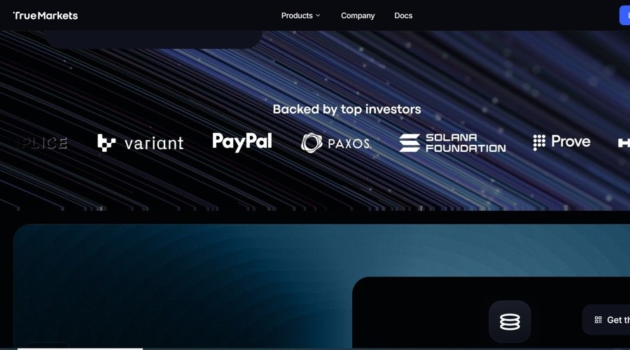

01 자본시장 인프라 이번 호 머리기사
ECB, 자체 자금으로 토큰증권 투자 착수
유럽중앙은행이 자체 자금의 일부를 블록체인 기반 증권에 투자하기로 했다. 결제는 9월 21일 가동한 폰테스에서 중앙은행화폐로 처리한다.

Weekly Digital Asset Brief
유럽과 홍콩은 공공 자금과 공공 채권을 토큰화 자산으로 시험했고, 브라질과 LSEG는 예탁·결제 인프라를 분산원장에 붙이며 운영 범위를 넓혔다. 기관 쪽에서는 토큰화 MMF가 거래 담보로 들어가고, 토큰화 주식 주문장이 열리며, 디지털 자산이 투자 대상에서 담보와 거래단으로 옮겨 갔다. 규제 쪽은 미국과 영국이 각각 수탁 예외와 인가 접수를 내놓아, 기관이 움직일 수 있는 절차를 먼저 열었다. 지역은 달라도 제도와 인프라가 먼저 움직이고 기관 참여가 그 뒤를 잇는 흐름은 같았다. 이번 주는 공공 발행과 기관 담보, 인가 접수의 속도가 어디까지 붙는지 봐야 한다.
Editor's Pick
01 자본시장 인프라 이번 호 머리기사
유럽중앙은행이 자체 자금의 일부를 블록체인 기반 증권에 투자하기로 했다. 결제는 9월 21일 가동한 폰테스에서 중앙은행화폐로 처리한다.
07 규제와 정책
“SEC는 허용된 수탁기관이 없을 때 투자자문사와 규제 대상 펀드가 제한적으로 가상자산을 자체 수탁할 수 있는 틀을 제안했다.”
08 규제와 정책
“2026년 9월 30일부터 영국 가상자산 기업은 FCA 인가를 신청할 수 있다.”
토큰증권과 디지털자산 수탁, 청산·결제와 예탁, 전자등록, CBDC와 예금토큰처럼 자본시장의 바탕을 이루는 제도와 시스템의 변화입니다.
01 Global Government Fintech 보도일 2026.09.28
유럽중앙은행이 자체 자금의 일부를 블록체인 기반 증권에 투자하기로 했다.
“폰테스는 유로시스템이 토큰화된 자산의 도매 거래를 중앙은행화폐로 결제하게 하는 운영 플랫폼이다.”
0102 Ledger Insights 보도일 2026.09.30
브라질 중앙예탁기관 CSD BR이 BTG 팩추얼 투자펀드 지분 기록을 공개 블록체인 XRP 레저에 토큰으로 반영한다.
“우리는 기록 미러링부터 시작하기로 했다. 핵심 시장 인프라에 새 기술을 넣는 가장 안전한 방식이라고 봤다.”
03 Finance Magnates 보도일 2026.09.28
LSEG가 기관용 블록체인 캔톤 네트워크의 슈퍼 밸리데이터로 지정됐다.
“참가자들은 캔톤에서 DiSH 현금을 써 장중 환매조건부채권 거래를 개념검증으로 결제했다.”
04 Ledger Insights 보도일 2026.10.02
홍콩 정부가 약 200억 홍콩달러, 미화 25억5천만달러 규모의 디지털 그린본드를 발행했다.
“투자자는 기존 결제망, 토큰화 중앙은행화폐, 토큰화 예금 가운데 결제 방식을 고를 수 있다.”
 04
04기관 투자자의 참여, 상장지수상품의 승인과 출시, 수탁사·운용사의 사업 진출, 합작과 시범 사업처럼 시장의 구조가 바뀌는 사건입니다. 가격 움직임은 다루지 않습니다.
05 Finance Magnates 보도일 2026.10.02
True Markets가 엔비디아를 기초자산으로 한 토큰화 주식 거래를 시작했다.
“첫 시장인 NVDAc/USDC는 회사 API와 FIX 게이트웨이로 베타 고객에게 제공된다.”

0506 Finance Magnates 보도일 2026.09.28
Franklin Templeton과 Bybit가 기관 고객용 오프거래소 담보 프로그램을 시작했다.
“고객은 펀드 지분을 팔지 않고도 Bybit에서 USDT나 USDC 신용한도를 받아 거래할 수 있다.”
 06
06법령과 시행령, 감독지침, 과세와 회계, 인가와 제재 등 국내외 당국이 확정한 규칙의 변화입니다.
07 미국 증권거래위원회(SEC) 보도일 2026.10.01
미국 증권거래위원회(SEC)가 투자자문사와 규제 대상 펀드의 가상자산 수탁 규칙 개정안을 냈다.
“SEC는 허용된 수탁기관이 없을 때 투자자문사와 규제 대상 펀드가 제한적으로 가상자산을 자체 수탁할 수 있는 틀을 제안했다.”
 07
0708 Markets Media 보도일 2026.10.01
영국 금융행위감독청(FCA)이 2026년 9월 30일부터 가상자산 기업 인가 신청을 받기 시작했다.
“2026년 9월 30일부터 영국 가상자산 기업은 FCA 인가를 신청할 수 있다.”
09 Ledger Insights 보도일 2026.10.01
미 재무부가 GENIUS Act에 따른 주별 스테이블코인 인증 절차를 담은 중간 규칙을 내놨다.
“미 재무부는 주별 스테이블코인 제도를 연방 기준과 실질적으로 비슷한지 심사하는 중간 절차 규칙을 공개했다.”
 09
09블록체인 인프라와 지갑, 브리지, 스마트컨트랙트의 기술 변화와 해킹·취약점·사고 같은 보안 사건입니다.
10 Forkast News 보도일 2026.10.04
Java용 암호 라이브러리 Bouncy Castle에서 MLS 신원 검증이 빠진 취약점이 공개됐다.
“공격자는 피해자 자격증명을 내세워 그룹에 들어간 뒤, 정상 사용자를 내보내고 이후 메시지를 복호화할 수 있다.”
 10
10